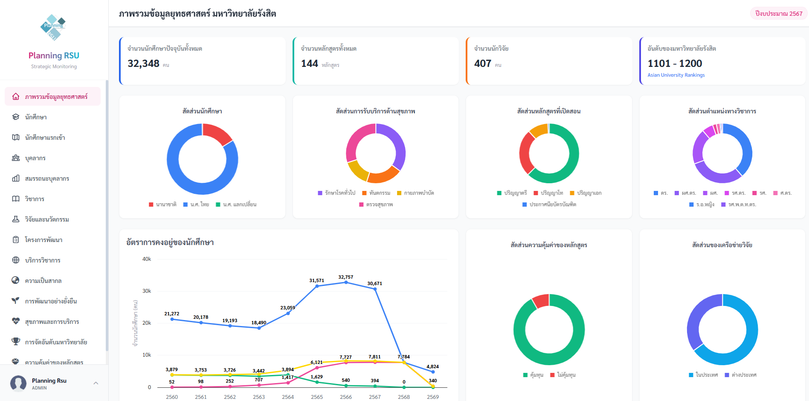
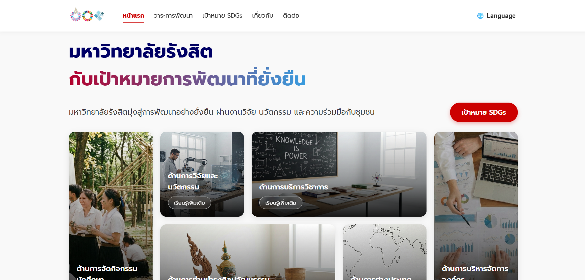
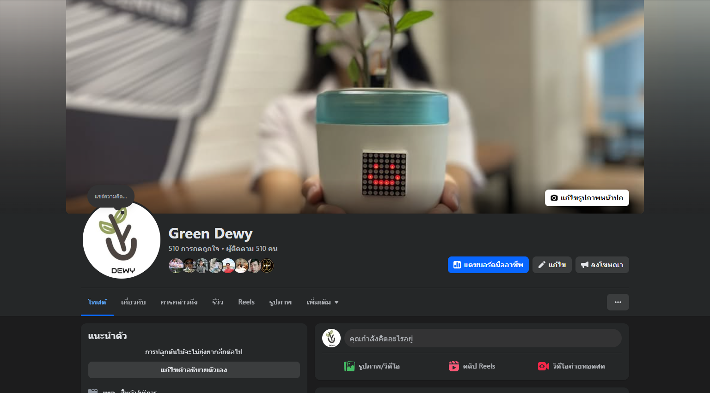
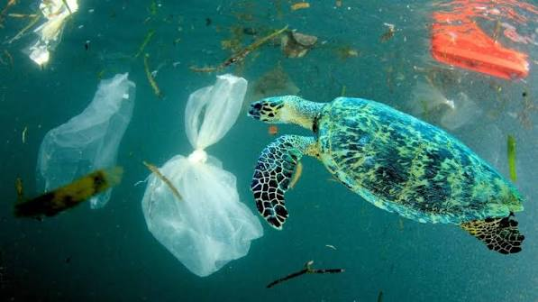

Planning & Development
An organizational strategic planning and analysis system with KPI tracking.
นักพัฒนาสาย IT ที่สนใจการสร้างเว็บไซต์และซอฟต์แวร์สมัยใหม่ เน้นการออกแบบที่ใช้งานง่าย รองรับทุกอุปกรณ์ และพร้อมต่อยอดสำหรับงานจริง
แนะนำตัวอย่างกระชับ เพื่อให้ recruiter เข้าใจตัวคุณในไม่กี่วินาที
ผมมีความสนใจในการพัฒนาเว็บไซต์และระบบซอฟต์แวร์ที่ตอบโจทย์การใช้งานจริง ถนัดการเขียนโค้ดเป็นระบบ ออกแบบหน้าเว็บ responsive และเชื่อมต่อระบบ backend/API
ต้องการร่วมงานในสาย IT เพื่อพัฒนาทักษะเชิงเทคนิค สร้างผลิตภัณฑ์ที่มีคุณค่า และเติบโตไปพร้อมกับทีมในระยะยาว

An organizational strategic planning and analysis system with KPI tracking.

A project supporting the Sustainable Development Goals (SDGs) through data presentation and digital media.

Developed and improved the WordPress website to enhance usability and access to environmental information.

An application/web project with a user-friendly UI designed to work across all devices.

Bachelor of Science in Digital Innovation
Email: yourname@email.com
GitHub: github.com/yourusername
LinkedIn: linkedin.com/in/yourusername
สามารถติดต่อเพื่อพูดคุยเกี่ยวกับโอกาสการทำงาน โปรเจกต์ หรือความร่วมมือในสาย IT ได้


{kind=link}
{kind=link}
{kind=link}
{kind=link}